2026 Advanced Higher Chemistry marking instructions
Source: Scottish Qualifications Authority (SQA) / Qualifications Scotland. This is a StemInteract HTML companion, not an official HTML edition. Selectable text is supplied alongside original page images. Use the images or original PDF for equations, powers, fractions, vector notation, tables and diagrams; text extraction cannot fully preserve mathematical layout.
Jump to a question
PDF page 1
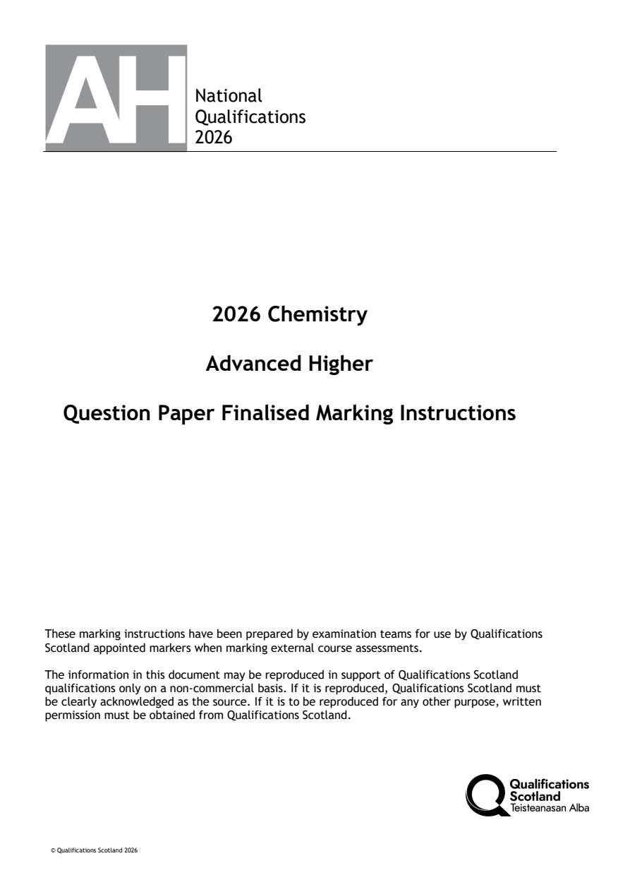
Selectable page text
National
Qualifications
2026
2026 Chemistry
Advanced Higher
Question Paper Finalised Marking Instructions
These marking instructions have been prepared by examination teams for use by Qualifications
Scotland appointed markers when marking external course assessments.
The information in this document may be reproduced in support of Qualifications Scotland
qualifications only on a non-commercial basis. If it is reproduced, Qualifications Scotland must
be clearly acknowledged as the source. If it is to be reproduced for any other purpose, written
permission must be obtained from Qualifications Scotland.
© Qualifications Scotland 2026PDF page 2
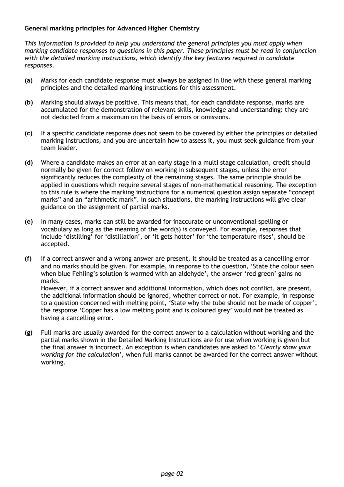
Selectable page text
General marking principles for Advanced Higher Chemistry
This information is provided to help you understand the general principles you must apply when
marking candidate responses to questions in this paper. These principles must be read in conjunction
with the detailed marking instructions, which identify the key features required in candidate
responses.
(a) Marks for each candidate response must always be assigned in line with these general marking
principles and the detailed marking instructions for this assessment.
(b) Marking should always be positive. This means that, for each candidate response, marks are
accumulated for the demonstration of relevant skills, knowledge and understanding: they are
not deducted from a maximum on the basis of errors or omissions.
(c) If a specific candidate response does not seem to be covered by either the principles or detailed
marking instructions, and you are uncertain how to assess it, you must seek guidance from your
team leader.
(d) Where a candidate makes an error at an early stage in a multi stage calculation, credit should
normally be given for correct follow on working in subsequent stages, unless the error
significantly reduces the complexity of the remaining stages. The same principle should be
applied in questions which require several stages of non-mathematical reasoning. The exception
to this rule is where the marking instructions for a numerical question assign separate “concept
marks” and an “arithmetic mark”. In such situations, the marking instructions will give clear
guidance on the assignment of partial marks.
(e) In many cases, marks can still be awarded for inaccurate or unconventional spelling or
vocabulary as long as the meaning of the word(s) is conveyed. For example, responses that
include ‘distilling’ for ‘distillation’, or ‘it gets hotter’ for ‘the temperature rises’, should be
accepted.
(f) If a correct answer and a wrong answer are present, it should be treated as a cancelling error
and no marks should be given. For example, in response to the question, ‘State the colour seen
when blue Fehling’s solution is warmed with an aldehyde’, the answer ‘red green’ gains no
marks.
However, if a correct answer and additional information, which does not conflict, are present,
the additional information should be ignored, whether correct or not. For example, in response
to a question concerned with melting point, ‘State why the tube should not be made of copper’,
the response ‘Copper has a low melting point and is coloured grey’ would not be treated as
having a cancelling error.
(g) Full marks are usually awarded for the correct answer to a calculation without working and the
partial marks shown in the Detailed Marking Instructions are for use when working is given but
the final answer is incorrect. An exception is when candidates are asked to ‘Clearly show your
working for the calculation’, when full marks cannot be awarded for the correct answer without
working.
page 02PDF page 3
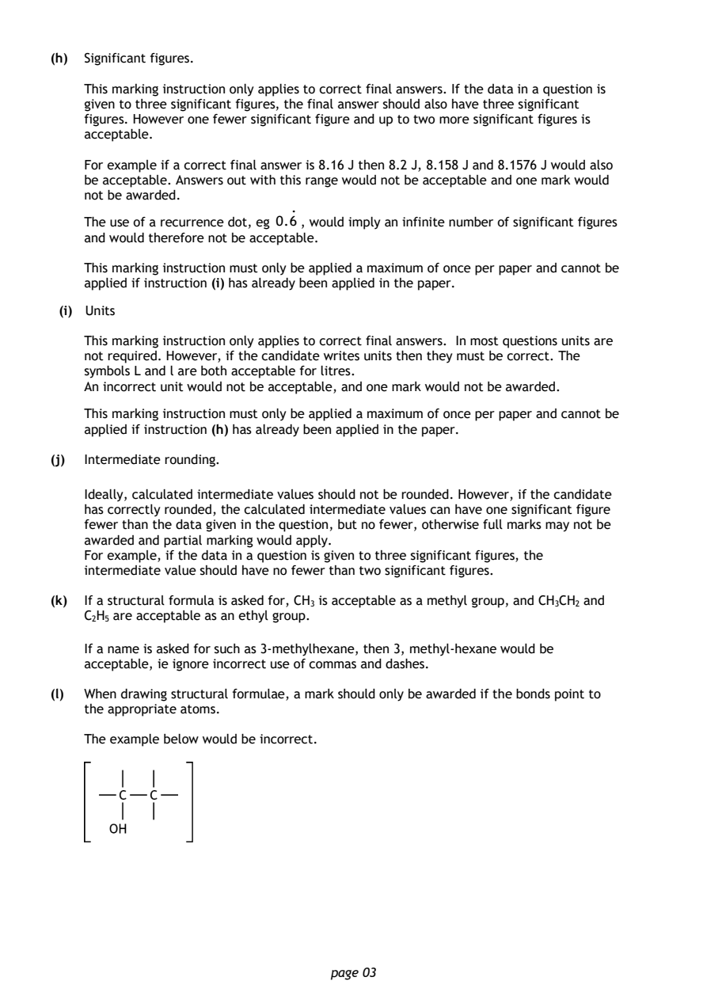
Selectable page text
(h) Significant figures.
This marking instruction only applies to correct final answers. If the data in a question is
given to three significant figures, the final answer should also have three significant
figures. However one fewer significant figure and up to two more significant figures is
acceptable.
For example if a correct final answer is 8.16 J then 8.2 J, 8.158 J and 8.1576 J would also
be acceptable. Answers out with this range would not be acceptable and one mark would
not be awarded.
.
The use of a recurrence dot, eg 0.6, would imply an infinite number of significant figures
and would therefore not be acceptable.
This marking instruction must only be applied a maximum of once per paper and cannot be
applied if instruction (i) has already been applied in the paper.
(i) Units
This marking instruction only applies to correct final answers. In most questions units are
not required. However, if the candidate writes units then they must be correct. The
symbols L and l are both acceptable for litres.
An incorrect unit would not be acceptable, and one mark would not be awarded.
This marking instruction must only be applied a maximum of once per paper and cannot be
applied if instruction (h) has already been applied in the paper.
(j) Intermediate rounding.
Ideally, calculated intermediate values should not be rounded. However, if the candidate
has correctly rounded, the calculated intermediate values can have one significant figure
fewer than the data given in the question, but no fewer, otherwise full marks may not be
awarded and partial marking would apply.
For example, if the data in a question is given to three significant figures, the
intermediate value should have no fewer than two significant figures.
(k) If a structural formula is asked for, CH₃ is acceptable as a methyl group, and CH₃CH₂ and
C₂H₅ are acceptable as an ethyl group.
If a name is asked for such as 3-methylhexane, then 3, methyl-hexane would be
acceptable, ie ignore incorrect use of commas and dashes.
(l) When drawing structural formulae, a mark should only be awarded if the bonds point to
the appropriate atoms.
The example below would be incorrect.
page 03PDF page 4
Paper 1, Question 1Paper 1, Question 2Paper 1, Question 3Paper 1, Question 4Paper 1, Question 5Paper 1, Question 6Paper 1, Question 7Paper 1, Question 8Paper 1, Question 9Paper 1, Question 10Paper 1, Question 11Paper 1, Question 12Paper 1, Question 13Paper 1, Question 14Paper 1, Question 15Paper 1, Question 16Paper 1, Question 17Paper 1, Question 18Paper 1, Question 19Paper 1, Question 20Paper 1, Question 21Paper 1, Question 22Paper 1, Question 23Paper 1, Question 24Paper 1, Question 25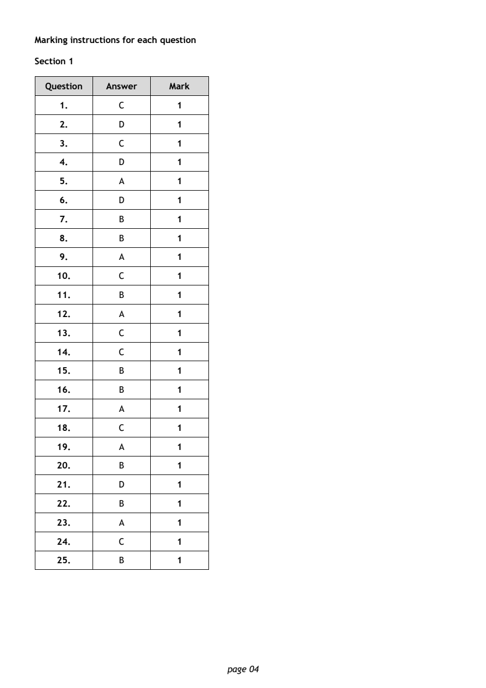
Selectable page text
Marking instructions for each question
Section 1
Question Answer Mark
1. C 1
2. D 1
3. C 1
4. D 1
5. A 1
6. D 1
7. B 1
8. B 1
9. A 1
10. C 1
11. B 1
12. A 1
13. C 1
14. C 1
15. B 1
16. B 1
17. A 1
18. C 1
19. A 1
20. B 1
21. D 1
22. B 1
23. A 1
24. C 1
25. B 1
page 04PDF page 5
Paper 2, Question 1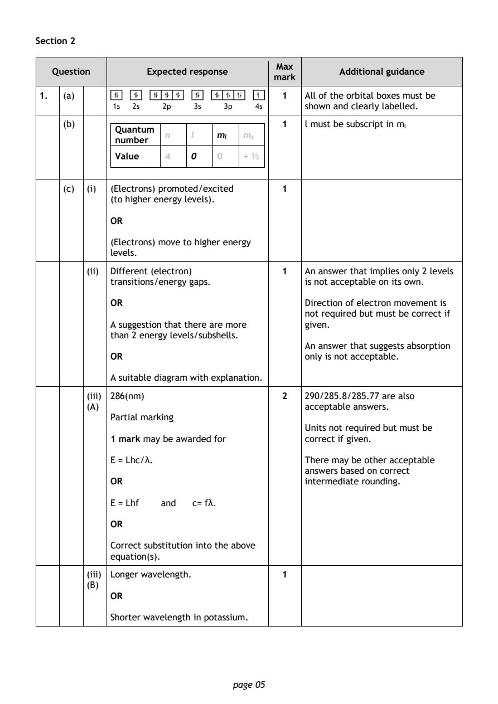
Selectable page text
Section 2
Max
Question Expected response Additional guidance
mark
1. (a) 1 All of the orbital boxes must be
shown and clearly labelled.
(b) 1 l must be subscript in m
Quantum l
n l m m
number l s
Value 4 0 0 + ½
(c) (i) (Electrons) promoted/excited 1
(to higher energy levels).
OR
(Electrons) move to higher energy
levels.
(ii) Different (electron) 1 An answer that implies only 2 levels
transitions/energy gaps. is not acceptable on its own.
OR Direction of electron movement is
not required but must be correct if
A suggestion that there are more given.
than 2 energy levels/subshells.
An answer that suggests absorption
OR only is not acceptable.
A suitable diagram with explanation.
(iii) 286(nm) 2 290/285.8/285.77 are also
(A) acceptable answers.
Partial marking
Units not required but must be
1 mark may be awarded for correct if given.
E = Lhc/λ. There may be other acceptable
answers based on correct
OR intermediate rounding.
E = Lhf and c= fλ.
OR
Correct substitution into the above
equation(s).
(iii) Longer wavelength. 1
(B)
OR
Shorter wavelength in potassium.
page 05PDF page 6
Paper 2, Question 2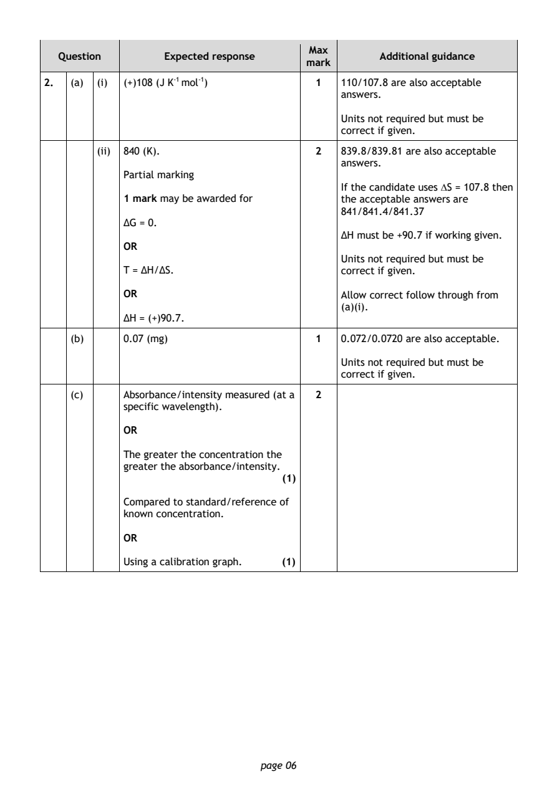
Selectable page text
Max
Question Expected response Additional guidance
mark
2. (a) (i) (+)108 (J K⁻¹ mol⁻¹) 1 110/107.8 are also acceptable
answers.
Units not required but must be
correct if given.
(ii) 840 (K). 2 839.8/839.81 are also acceptable
answers.
Partial marking
If the candidate uses ∆S = 107.8 then
1 mark may be awarded for the acceptable answers are
841/841.4/841.37
ΔG = 0.
ΔH must be +90.7 if working given.
OR
Units not required but must be
T = ΔH/ΔS. correct if given.
OR Allow correct follow through from
(a)(i).
ΔH = (+)90.7.
(b) 0.07 (mg) 1 0.072/0.0720 are also acceptable.
Units not required but must be
correct if given.
(c) Absorbance/intensity measured (at a 2
specific wavelength).
OR
The greater the concentration the
greater the absorbance/intensity.
(1)
Compared to standard/reference of
known concentration.
OR
Using a calibration graph. (1)
page 06PDF page 7
Paper 2, Question 3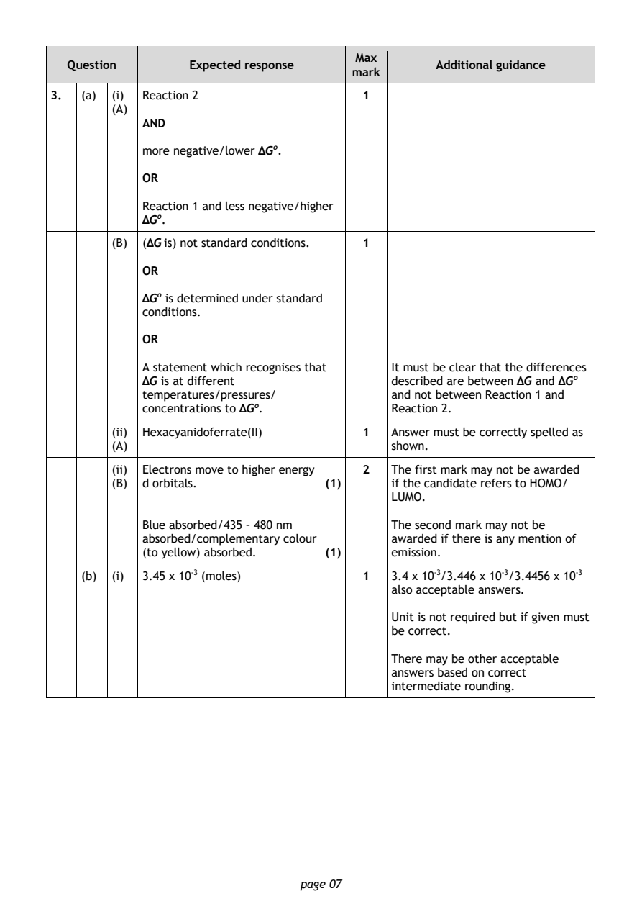
Selectable page text
Max
Question Expected response Additional guidance
mark
3. (a) (i) Reaction 2 1
(A)
AND
more negative/lower ∆G^{o}.
OR
Reaction 1 and less negative/higher
∆G^{o}.
(B) (∆Gis) not standard conditions. 1
OR
∆G^{o} is determined under standard
conditions.
OR
A statement which recognises that It must be clear that the differences
∆G is at different described are between ∆G and ∆G^{o}
temperatures/pressures/ and not between Reaction 1 and
concentrations to ∆G^{o}. Reaction 2.
(ii) Hexacyanidoferrate(II) 1 Answer must be correctly spelled as
(A) shown.
(ii) Electrons move to higher energy 2 The first mark may not be awarded
(B) d orbitals. (1) if the candidate refers to HOMO/
LUMO.
Blue absorbed/435 – 480 nm The second mark may not be
absorbed/complementary colour awarded if there is any mention of
(to yellow) absorbed. (1) emission.
(b) (i) 3.45 x 10⁻³ (moles) 1 3.4 x 10⁻³/3.446 x 10⁻³/3.4456 x 10⁻³
also acceptable answers.
Unit is not required but if given must
be correct.
There may be other acceptable
answers based on correct
intermediate rounding.
page 07PDF page 8
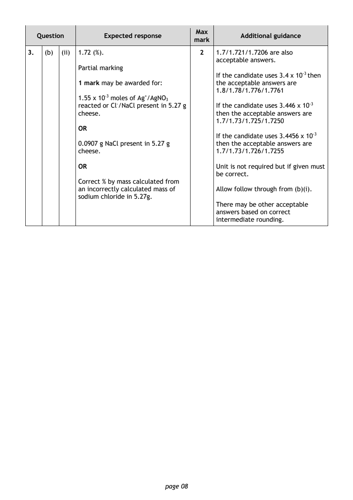
Selectable page text
Max
Question Expected response Additional guidance
mark
3. (b) (ii) 1.72 (%). 2 1.7/1.721/1.7206 are also
acceptable answers.
Partial marking
If the candidate uses 3.4 x 10⁻³ then
1 mark may be awarded for: the acceptable answers are
1.8/1.78/1.776/1.7761
1.55 x 10⁻³ moles of Ag⁺/AgNO₃
reacted or Cl⁻/NaCl present in 5.27 g If the candidate uses 3.446 x 10⁻³
cheese. then the acceptable answers are
1.7/1.73/1.725/1.7250
OR
If the candidate uses 3.4456 x 10⁻³
0.0907 g NaCl present in 5.27 g then the acceptable answers are
cheese. 1.7/1.73/1.726/1.7255
OR Unit is not required but if given must
be correct.
Correct % by mass calculated from
an incorrectly calculated mass of Allow follow through from (b)(i).
sodium chloride in 5.27g.
There may be other acceptable
answers based on correct
intermediate rounding.
page 08PDF page 9
Paper 2, Question 4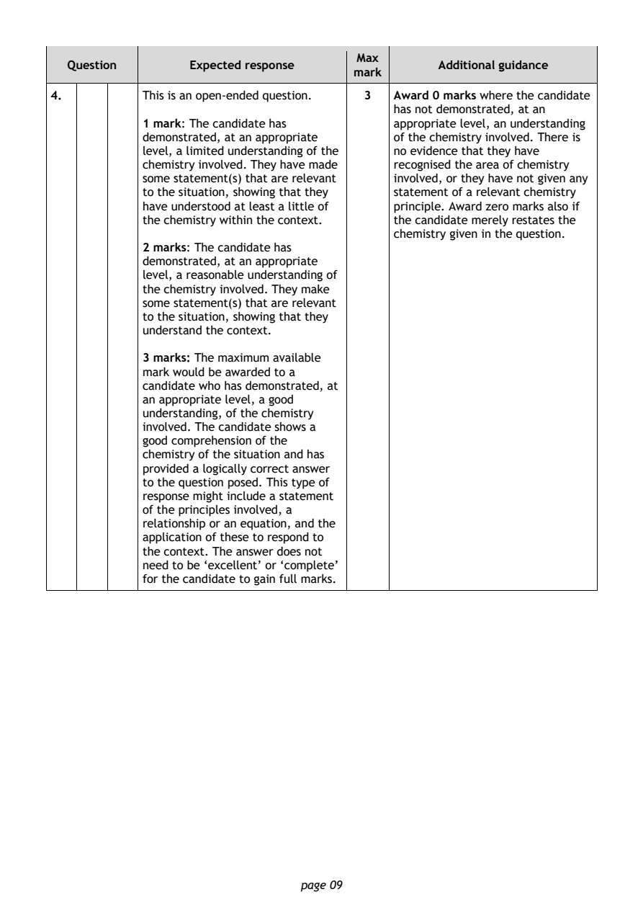
Selectable page text
Max
Question Expected response Additional guidance
mark
4. This is an open-ended question. 3 Award 0 marks where the candidate
has not demonstrated, at an
1 mark: The candidate has appropriate level, an understanding
demonstrated, at an appropriate of the chemistry involved. There is
level, a limited understanding of the no evidence that they have
chemistry involved. They have made recognised the area of chemistry
some statement(s) that are relevant involved, or they have not given any
to the situation, showing that they statement of a relevant chemistry
have understood at least a little of principle. Award zero marks also if
the chemistry within the context. the candidate merely restates the
chemistry given in the question.
2 marks: The candidate has
demonstrated, at an appropriate
level, a reasonable understanding of
the chemistry involved. They make
some statement(s) that are relevant
to the situation, showing that they
understand the context.
3 marks: The maximum available
mark would be awarded to a
candidate who has demonstrated, at
an appropriate level, a good
understanding, of the chemistry
involved. The candidate shows a
good comprehension of the
chemistry of the situation and has
provided a logically correct answer
to the question posed. This type of
response might include a statement
of the principles involved, a
relationship or an equation, and the
application of these to respond to
the context. The answer does not
need to be ‘excellent’ or ‘complete’
for the candidate to gain full marks.
page 09PDF page 10
Paper 2, Question 5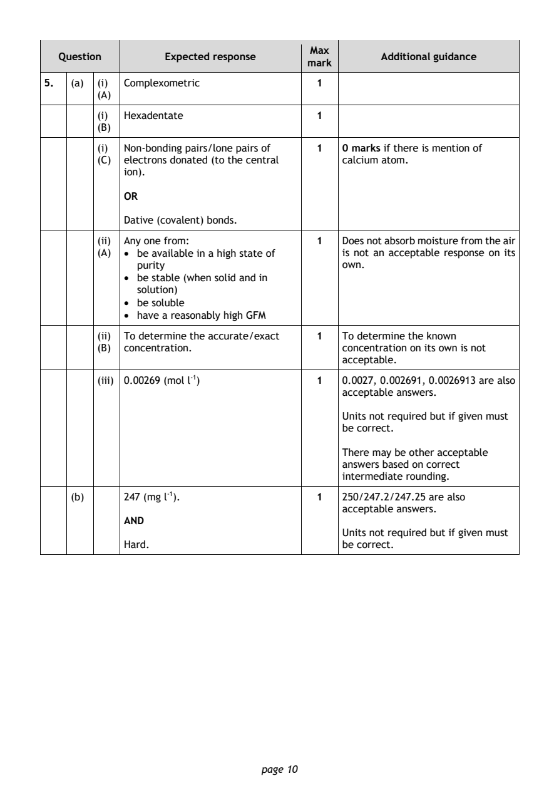
Selectable page text
Max
Question Expected response Additional guidance
mark
5. (a) (i) Complexometric 1
(A)
(i) Hexadentate 1
(B)
(i) Non-bonding pairs/lone pairs of 1 0 marks if there is mention of
(C) electrons donated (to the central calcium atom.
ion).
OR
Dative (covalent) bonds.
(ii) Any one from: 1 Does not absorb moisture from the air
(A) • be available in a high state of is not an acceptable response on its
purity own.
• be stable (when solid and in
solution)
• be soluble
• have a reasonably high GFM
(ii) To determine the accurate/exact 1 To determine the known
(B) concentration. concentration on its own is not
acceptable.
(iii) 0.00269 (mol l⁻¹) 1 0.0027, 0.002691, 0.0026913 are also
acceptable answers.
Units not required but if given must
be correct.
There may be other acceptable
answers based on correct
intermediate rounding.
(b) 247 (mg l⁻¹). 1 250/247.2/247.25 are also
acceptable answers.
AND
Units not required but if given must
Hard. be correct.
page 10PDF page 11
Paper 2, Question 6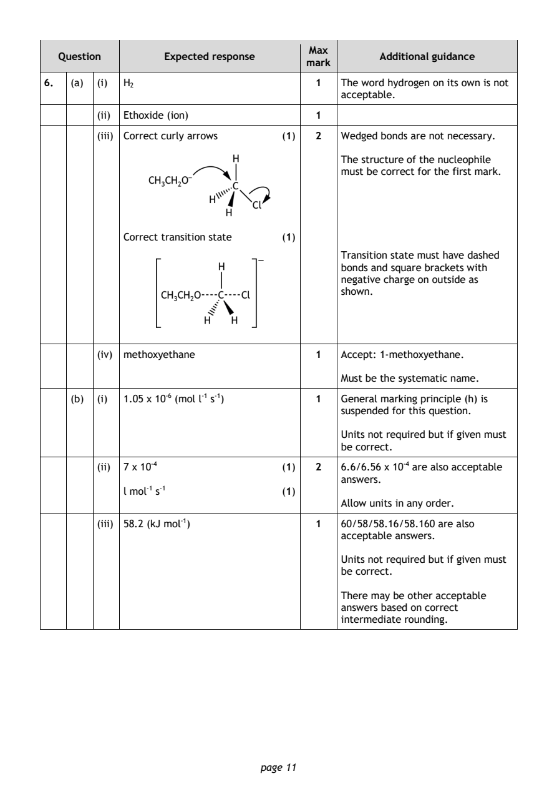
Selectable page text
Max
Question Expected response Additional guidance
mark
6. (a) (i) H₂ 1 The word hydrogen on its own is not
acceptable.
(ii) Ethoxide (ion) 1
(iii) Correct curly arrows (1) 2 Wedged bonds are not necessary.
The structure of the nucleophile
must be correct for the first mark.
Correct transition state (1)
Transition state must have dashed
bonds and square brackets with
negative charge on outside as
shown.
(iv) methoxyethane 1 Accept: 1-methoxyethane.
Must be the systematic name.
(b) (i) 1.05 x 10⁻⁶ (mol l⁻¹ s⁻¹) 1 General marking principle (h) is
suspended for this question.
Units not required but if given must
be correct.
(ii) 7 x 10⁻⁴ (1) 2 6.6/6.56 x 10⁻⁴ are also acceptable
answers.
l mol⁻¹ s⁻¹ (1)
Allow units in any order.
(iii) 58.2 (kJ mol⁻¹) 1 60/58/58.16/58.160 are also
acceptable answers.
Units not required but if given must
be correct.
There may be other acceptable
answers based on correct
intermediate rounding.
page 11PDF page 12
Paper 2, Question 7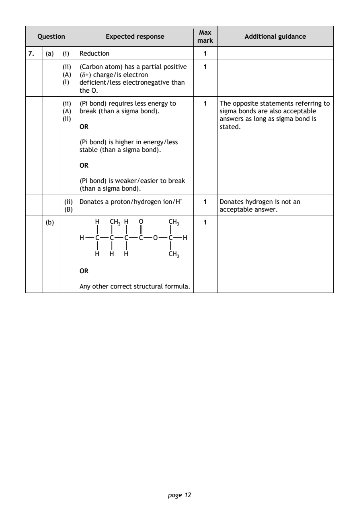
Selectable page text
Max
Question Expected response Additional guidance
mark
7. (a) (i) Reduction 1
(ii) (Carbon atom) has a partial positive 1
(A) (δ+) charge/is electron
(I) deficient/less electronegative than
the O.
(ii) (Pi bond) requires less energy to 1 The opposite statements referring to
(A) break (than a sigma bond). sigma bonds are also acceptable
(II) answers as long as sigma bond is
OR stated.
(Pi bond) is higher in energy/less
stable (than a sigma bond).
OR
(Pi bond) is weaker/easier to break
(than a sigma bond).
(ii) Donates a proton/hydrogen ion/H⁺ 1 Donates hydrogen is not an
(B) acceptable answer.
(b) 1
OR
Any other correct structural formula.
page 12PDF page 13
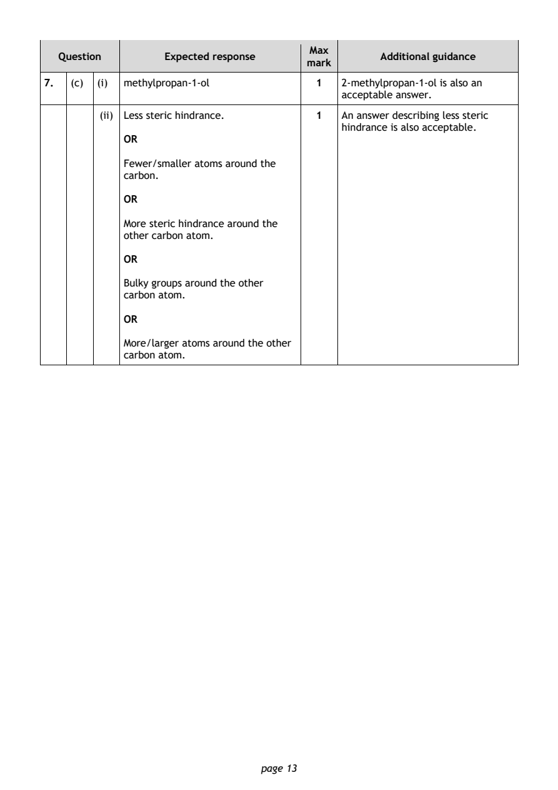
Selectable page text
Max
Question Expected response Additional guidance
mark
7. (c) (i) methylpropan-1-ol 1 2-methylpropan-1-ol is also an
acceptable answer.
(ii) Less steric hindrance. 1 An answer describing less steric
hindrance is also acceptable.
OR
Fewer/smaller atoms around the
carbon.
OR
More steric hindrance around the
other carbon atom.
OR
Bulky groups around the other
carbon atom.
OR
More/larger atoms around the other
carbon atom.
page 13PDF page 14
Paper 2, Question 8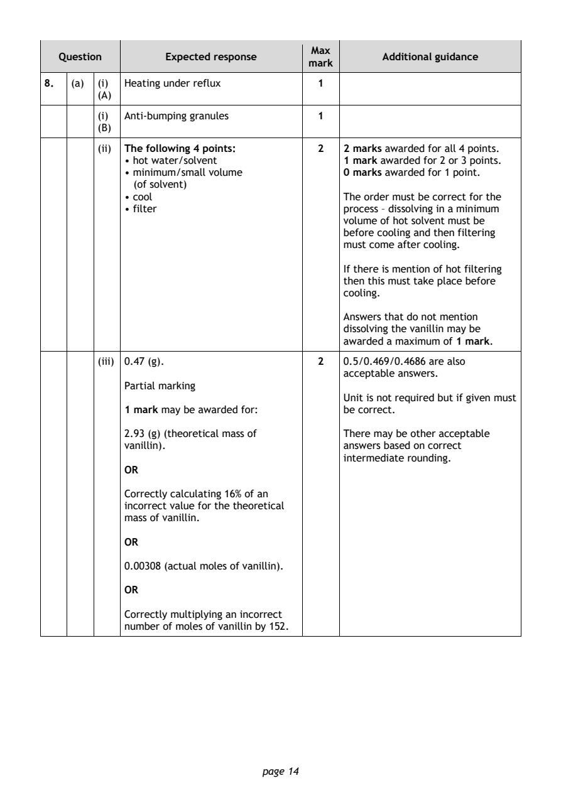
Selectable page text
Max
Question Expected response Additional guidance
mark
8. (a) (i) Heating under reflux 1
(A)
(i) Anti-bumping granules 1
(B)
(ii) The following 4 points: 2 2 marks awarded for all 4 points.
• hot water/solvent 1 mark awarded for 2 or 3 points.
• minimum/small volume 0 marks awarded for 1 point.
(of solvent)
• cool The order must be correct for the
• filter process – dissolving in a minimum
volume of hot solvent must be
before cooling and then filtering
must come after cooling.
If there is mention of hot filtering
then this must take place before
cooling.
Answers that do not mention
dissolving the vanillin may be
awarded a maximum of 1 mark.
(iii) 0.47 (g). 2 0.5/0.469/0.4686 are also
acceptable answers.
Partial marking
Unit is not required but if given must
1 mark may be awarded for: be correct.
2.93 (g) (theoretical mass of There may be other acceptable
vanillin). answers based on correct
intermediate rounding.
OR
Correctly calculating 16% of an
incorrect value for the theoretical
mass of vanillin.
OR
0.00308 (actual moles of vanillin).
OR
Correctly multiplying an incorrect
number of moles of vanillin by 152.
page 14PDF page 15
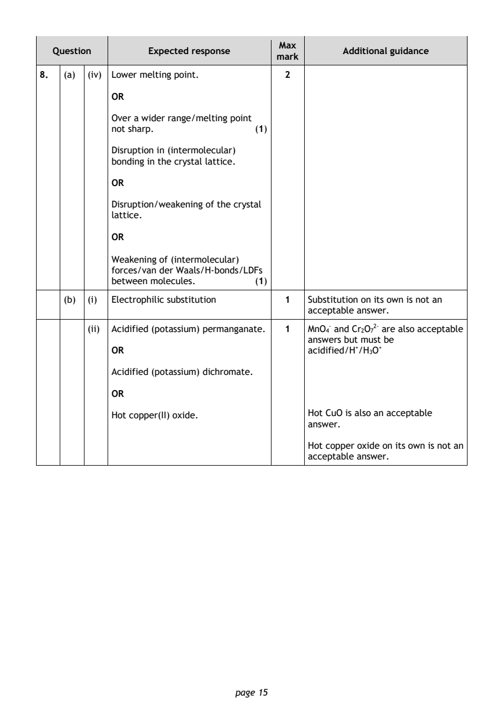
Selectable page text
Max
Question Expected response Additional guidance
mark
8. (a) (iv) Lower melting point. 2
OR
Over a wider range/melting point
not sharp. (1)
Disruption in (intermolecular)
bonding in the crystal lattice.
OR
Disruption/weakening of the crystal
lattice.
OR
Weakening of (intermolecular)
forces/van der Waals/H-bonds/LDFs
between molecules. (1)
(b) (i) Electrophilic substitution 1 Substitution on its own is not an
acceptable answer.
(ii) Acidified (potassium) permanganate. 1 MnO₄⁻ and Cr₂O₇²⁻ are also acceptable
answers but must be
OR acidified/H⁺/H₃O⁺
Acidified (potassium) dichromate.
OR
Hot copper(II) oxide. Hot CuO is also an acceptable
answer.
Hot copper oxide on its own is not an
acceptable answer.
page 15PDF page 16
Paper 2, Question 9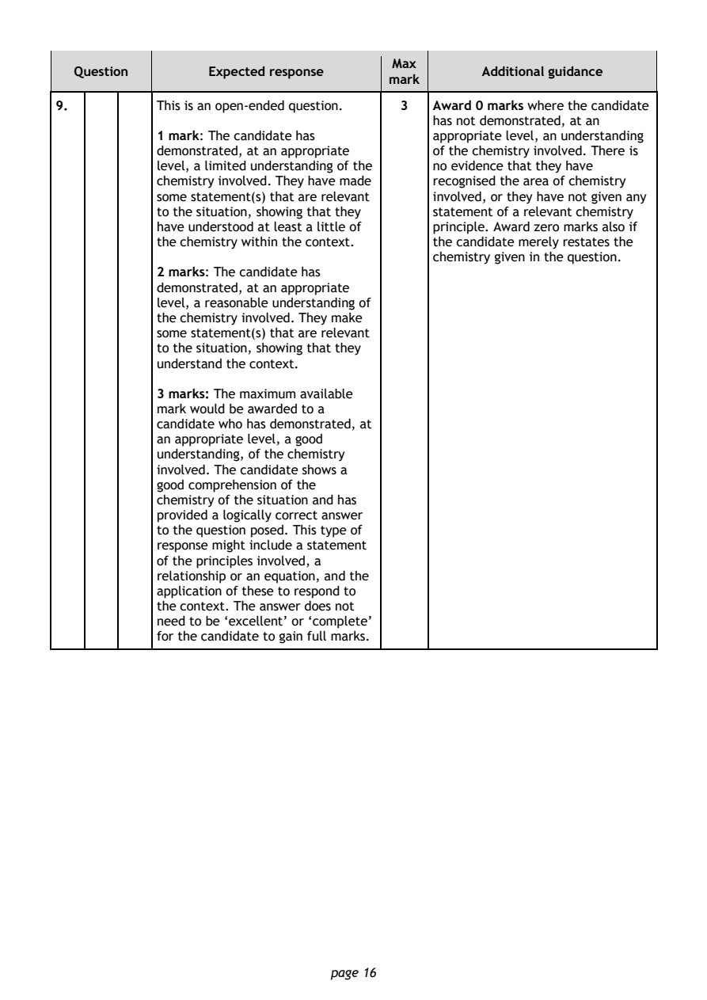
Selectable page text
Max
Question Expected response Additional guidance
mark
9. This is an open-ended question. 3 Award 0 marks where the candidate
has not demonstrated, at an
1 mark: The candidate has appropriate level, an understanding
demonstrated, at an appropriate of the chemistry involved. There is
level, a limited understanding of the no evidence that they have
chemistry involved. They have made recognised the area of chemistry
some statement(s) that are relevant involved, or they have not given any
to the situation, showing that they statement of a relevant chemistry
have understood at least a little of principle. Award zero marks also if
the chemistry within the context. the candidate merely restates the
chemistry given in the question.
2 marks: The candidate has
demonstrated, at an appropriate
level, a reasonable understanding of
the chemistry involved. They make
some statement(s) that are relevant
to the situation, showing that they
understand the context.
3 marks: The maximum available
mark would be awarded to a
candidate who has demonstrated, at
an appropriate level, a good
understanding, of the chemistry
involved. The candidate shows a
good comprehension of the
chemistry of the situation and has
provided a logically correct answer
to the question posed. This type of
response might include a statement
of the principles involved, a
relationship or an equation, and the
application of these to respond to
the context. The answer does not
need to be ‘excellent’ or ‘complete’
for the candidate to gain full marks.
page 16PDF page 17
Paper 2, Question 10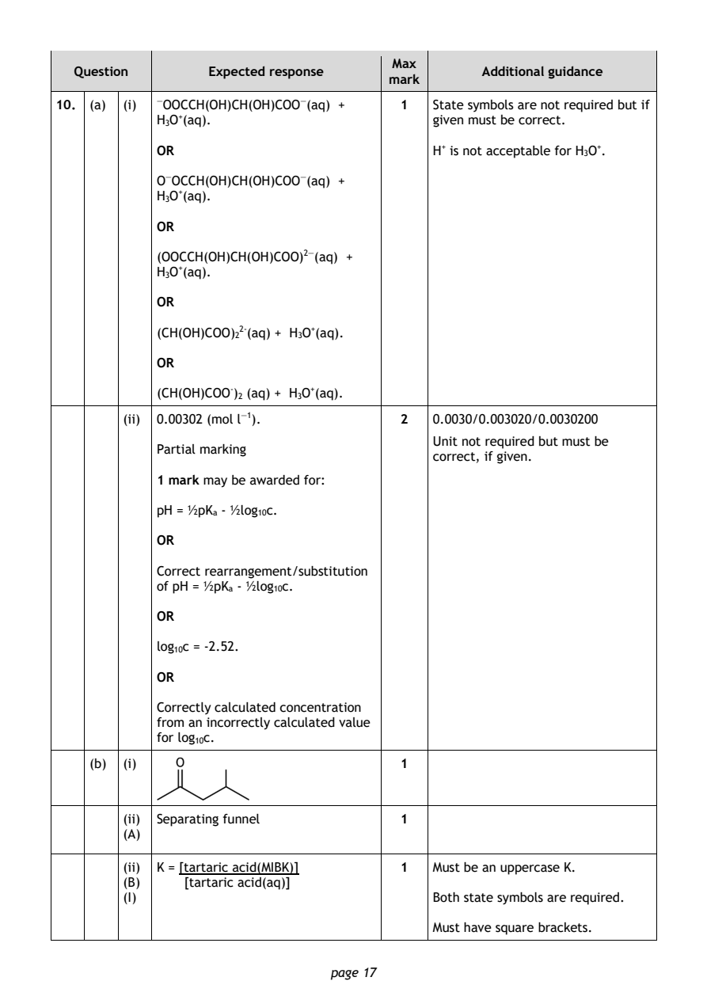
Selectable page text
Max
Question Expected response Additional guidance
mark
10. (a) (i) —OOCCH(OH)CH(OH)COO^{—}(aq) + 1 State symbols are not required but if
H₃O⁺(aq). given must be correct.
OR H⁺ is not acceptable for H₃O⁺.
O^{—}OCCH(OH)CH(OH)COO^{—}(aq) +
H₃O⁺(aq).
OR
(OOCCH(OH)CH(OH)COO)²^{—}(aq) +
H₃O⁺(aq).
OR
(CH(OH)COO) ²⁻(aq) + H₃O⁺(aq).
2
OR
(CH(OH)COO⁻) (aq) + H₃O⁺(aq).
2
(ii) 0.00302 (mol l^{—}¹). 2 0.0030/0.003020/0.0030200
Unit not required but must be
Partial marking
correct, if given.
1 mark may be awarded for:
pH = ½pK - ½log₁ c.
a 0
OR
Correct rearrangement/substitution
of pH = ½pK - ½log₁ c.
a 0
OR
log₁ c = -2.52.
0
OR
Correctly calculated concentration
from an incorrectly calculated value
for log₁ c.
0
(b) (i) 1
(ii) Separating funnel 1
(A)
(ii) K = [tartaric acid(MIBK)] 1 Must be an uppercase K.
(B) [tartaric acid(aq)]
(I) Both state symbols are required.
Must have square brackets.
page 17PDF page 18
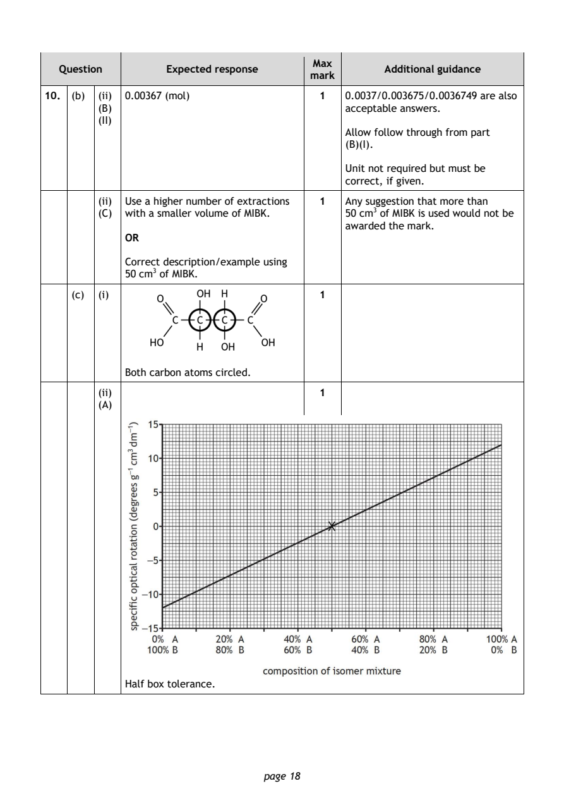
Selectable page text
Max
Question Expected response Additional guidance
mark
10. (b) (ii) 0.00367 (mol) 1 0.0037/0.003675/0.0036749 are also
(B) acceptable answers.
(II)
Allow follow through from part
(B)(I).
Unit not required but must be
correct, if given.
(ii) Use a higher number of extractions 1 Any suggestion that more than
(C) with a smaller volume of MIBK. 50 cm³ of MIBK is used would not be
awarded the mark.
OR
Correct description/example using
50 cm³ of MIBK.
(c) (i) 1
Both carbon atoms circled.
(ii) 1
(A)
Half box tolerance.
page 18PDF page 19
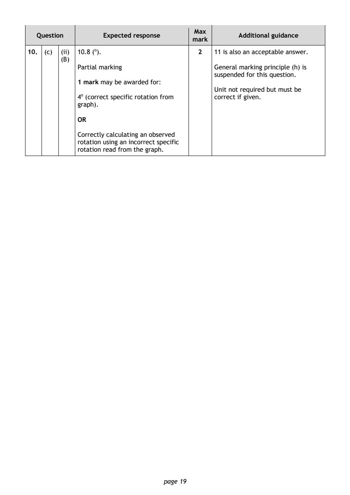
Selectable page text
Max
Question Expected response Additional guidance
mark
10. (c) (ii) 10.8 (^{o}). 2 11 is also an acceptable answer.
(B)
Partial marking General marking principle (h) is
suspended for this question.
1 mark may be awarded for:
Unit not required but must be
4^{o} (correct specific rotation from correct if given.
graph).
OR
Correctly calculating an observed
rotation using an incorrect specific
rotation read from the graph.
page 19PDF page 20
Paper 2, Question 11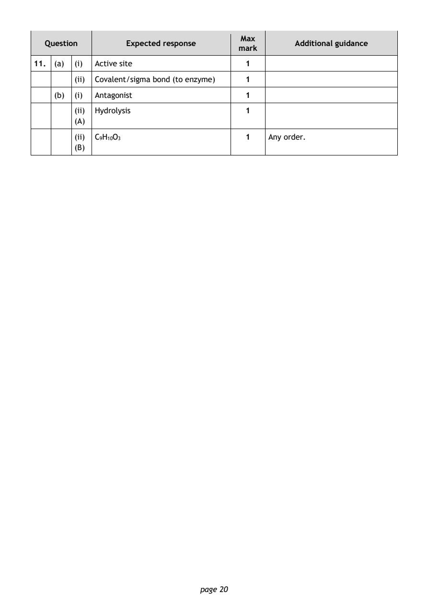
Selectable page text
Max
Question Expected response Additional guidance
mark
11. (a) (i) Active site 1
(ii) Covalent/sigma bond (to enzyme) 1
(b) (i) Antagonist 1
(ii) Hydrolysis 1
(A)
(ii) C₉H₁ O₃ 1 Any order.
0
(B)
page 20PDF page 21
Paper 2, Question 12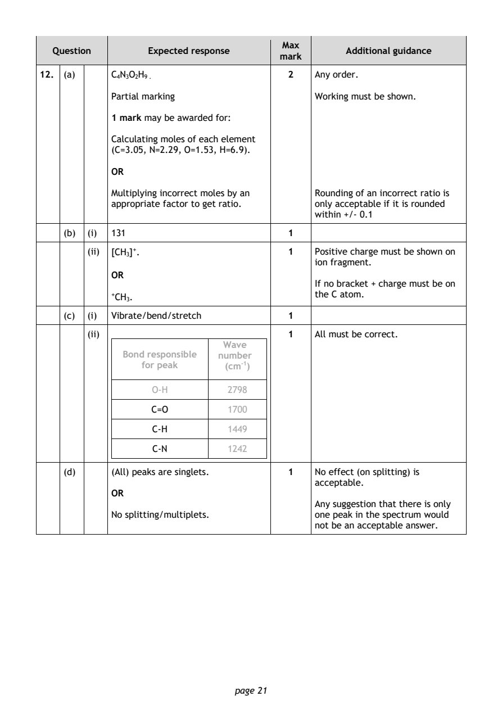
Selectable page text
Max
Question Expected response Additional guidance
mark
12. (a) C₄N₃O₂H₉ 2 Any order.
.
Partial marking Working must be shown.
1 mark may be awarded for:
Calculating moles of each element
(C=3.05, N=2.29, O=1.53, H=6.9).
OR
Multiplying incorrect moles by an Rounding of an incorrect ratio is
appropriate factor to get ratio. only acceptable if it is rounded
within +/- 0.1
(b) (i) 131 1
(ii) [CH₃]⁺. 1 Positive charge must be shown on
ion fragment.
OR
If no bracket + charge must be on
+CH₃. the C atom.
(c) (i) Vibrate/bend/stretch 1
(ii) 1 All must be correct.
Wave
Bond responsible number
for peak (cm⁻¹)
O-H 2798
C=O 1700
C-H 1449
C-N 1242
(d) (All) peaks are singlets. 1 No effect (on splitting) is
acceptable.
OR
Any suggestion that there is only
No splitting/multiplets. one peak in the spectrum would
not be an acceptable answer.
page 21PDF page 22
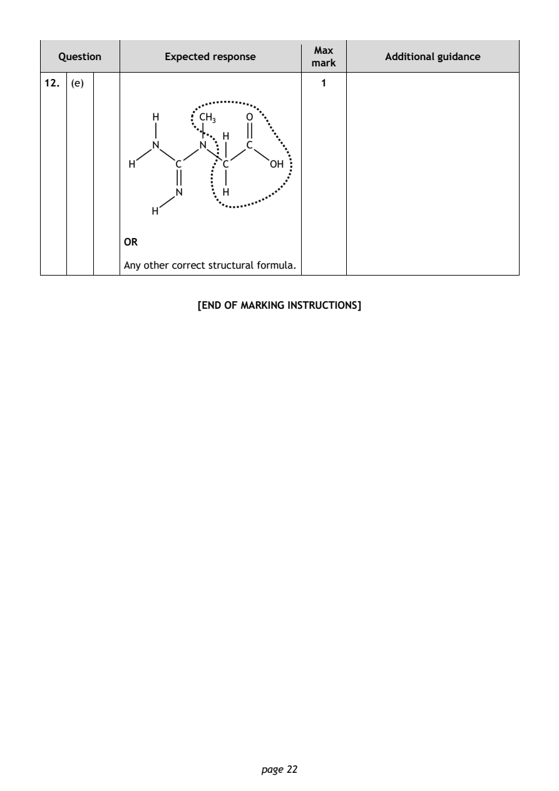
Selectable page text
Max
Question Expected response Additional guidance
mark
12. (e) 1
OR
Any other correct structural formula.
[END OF MARKING INSTRUCTIONS]
page 22